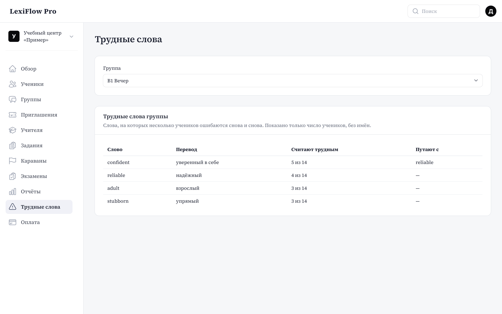

Страница показывает, какие слова вашему классу даются хуже всего. Слово считается трудным для ученика, когда он ошибся в нём не меньше четырёх раз.
Кто имеет доступ: владелец — все группы центра; учитель — свои группы.

| Колонка | Что значит |
|---|---|
| Слово, Перевод | перевод — на языке кабинета |
| Считают трудным | например, «5 из 14» — у пятерых из 14 учеников группы |
| Путают с | похожее слово, которое пометил автор курса; «—», если пометки нет |
Имён учеников нет — только число. Если трудных слов нет, страница так и скажет: «Трудных слов пока нет». Те же данные по одному уроку показывает блок «Что повторить» на странице задания.